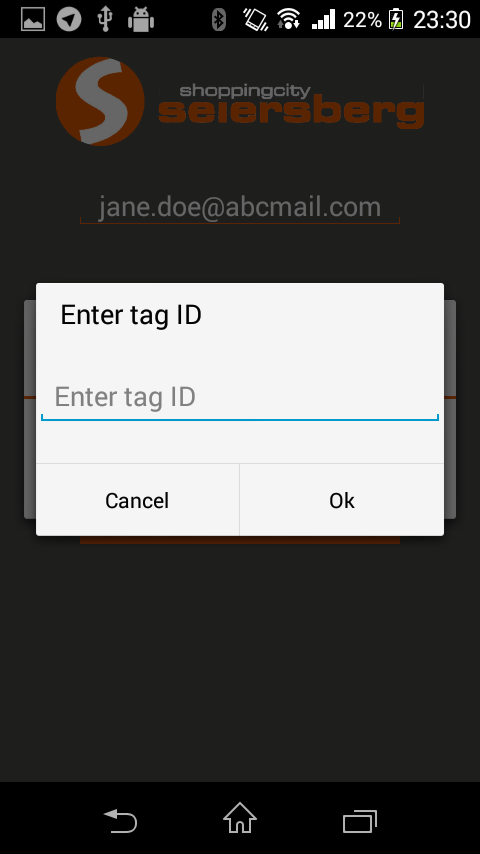
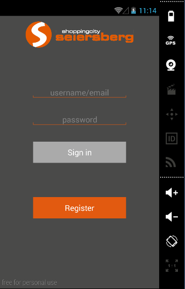
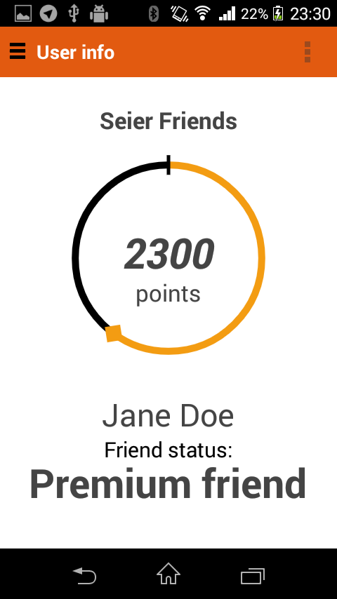
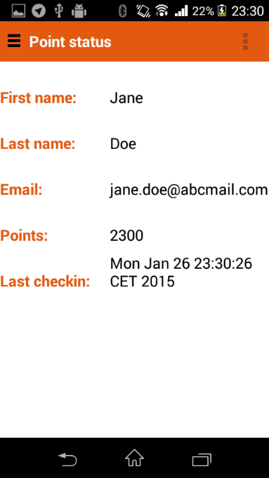
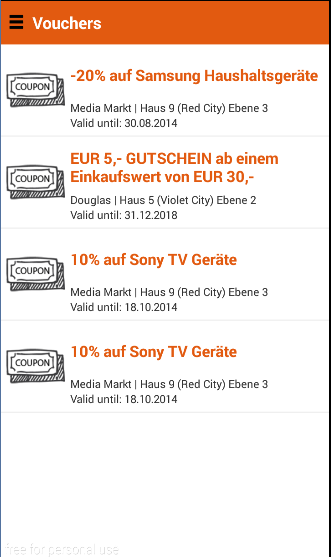

SeierFriendApp
customer loyalty application

Članovi tima
- Viktor Lazar
- Martina Šestak
- Goran Vodomin
- Matej Vuković
Mentori
- Dr. sc. Zlatko Stapić
- Ivan Švogor, mag. inf.
- Christian Adelsberge
- Hermann Moser
- Martin Schumann
SeierFriendApp mobilna aplikacija je namijenjena posjetiteljima Shopping Cityja Seiersberg u Grazu.
Posjetitelji mogu postati „Prijatelji Seiersberga“ i skupljati bodove prilikom svakog posjeta.
Postoje 3 razine "prijatelja":
- Basic Friend
- Top Friend
- Premium Friend
Trenutno su u shopping cityju postavljena 4 terminala na kojima „Prijatelji Seiersberga“ mogu pregledati svoj status bodova i kupona korištenjem svojih NFC kartica.
Glavni cilj našeg projekta bio je istražiti mogućnost zamjene dosadašnjih NFC kartica Bluetooth Low Energy tehnologijom.
Umjesto korištenja NFC kartica korisnici će imati svu funkcionalnost terminala na svojim uređajima.
Zašto Bluetooth Low Energy?
- Nova tehnologija (2010.)
- Manja potrošnja baterije u usporedbi s Bluetoothom
- Dostupna i na manjim uređajima (satovi, igre…)
- Internet of Things
- Komunikaciju između uređaja moguće ostvariti unutar većeg dosega (nekoliko metara)
- Manji troškovi implementacije
- Interoperabilnost
Beacon uređaji
- Šalju beacon signale
- Svaki beacon sadrži MAC adresu uređaja
Korisnička priča SeierFriendApp aplikacije
- Korisnik se registrira online i dobiva status „Prijatelj Seiersberga“
- Korisnik dođe u shopping city…
- Aplikacija prepoznaje Bluetooth LE beacon uređaj i prikazuje notifikaciju na korisnikovom uređaju…
- Korisnik otvara notifikaciju checkin (dobiva bodove) ili obična prijava
- Korisnik pregledava status bodova i kupona, svoje informacije itd.
- Korisnik se odjavljuje
Funkcionalnosti SeierFriendApp aplikacije
Checkin korisnika i dobivanje bodova
Prijava korisnika
Pregled bodovnog stanja
Pregled korinsikokvih informacija
Pregled dostupnih kupona
Arhitektura sustava

Arhitektura aplikacije